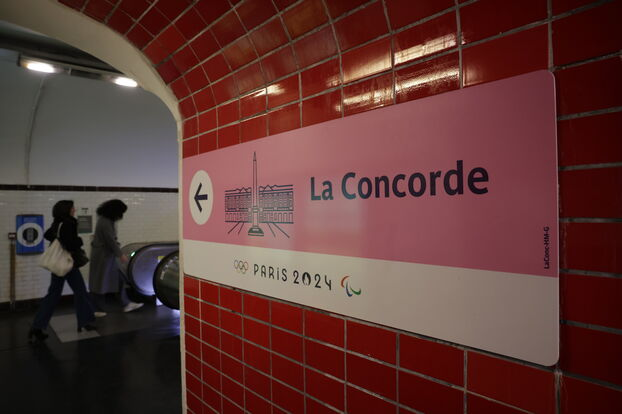
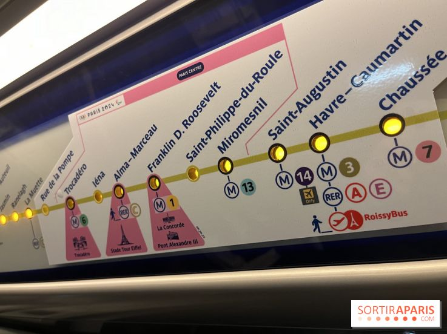
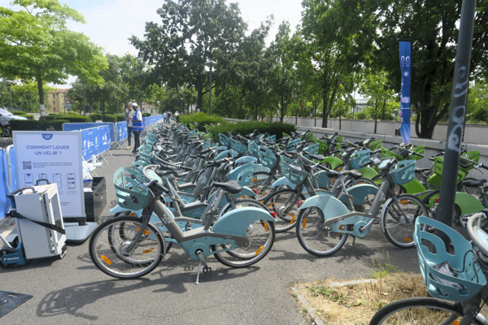
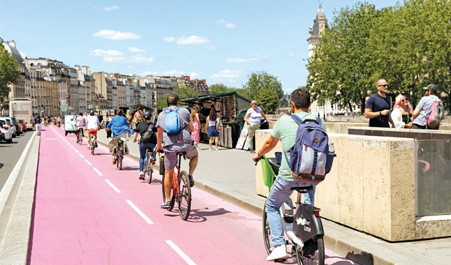
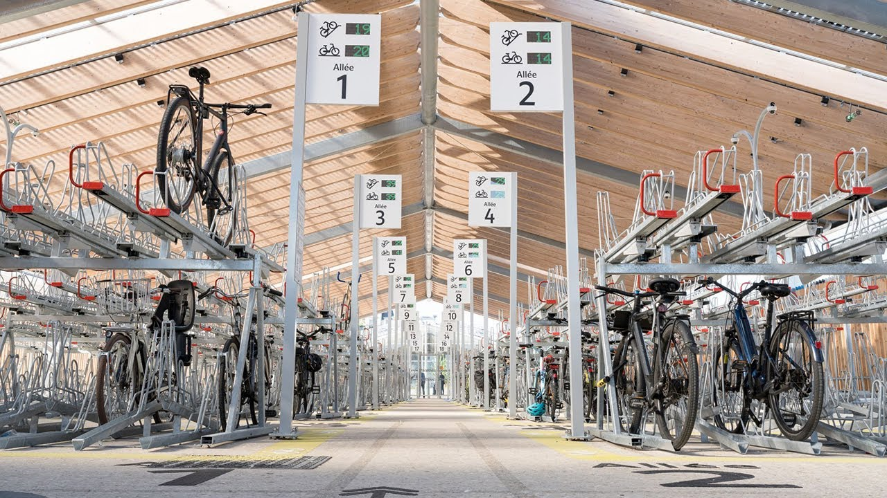
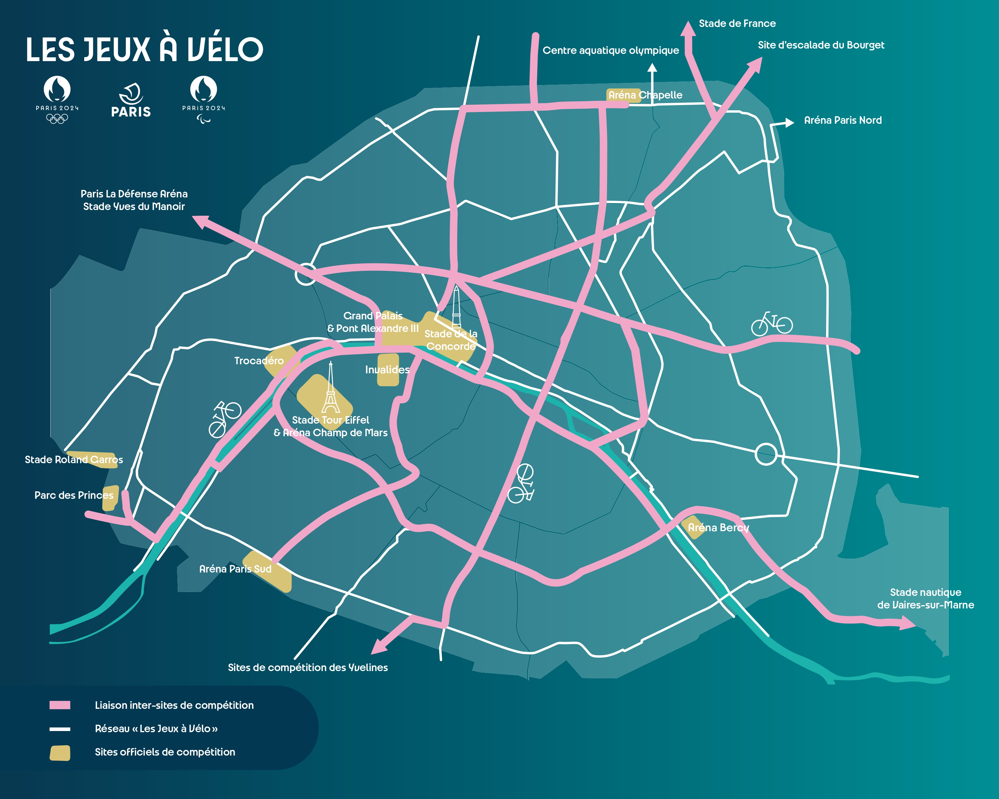
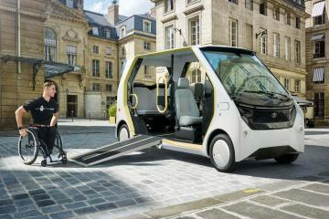
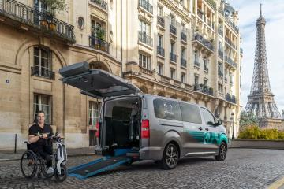

Le réseau de transport parisien qui est déjà l'un des plus denses au monde, a été modernisé pour Les Jeux Olympiques et Paralympiques de Paris 2024, avec un accent mis sur les transports en commun et les mobilités douces.

Le réseau de transport parisien qui est déjà l'un des plus denses au monde, a été modernisé pour Les Jeux Olympiques et Paralympiques de Paris 2024, avec un accent mis sur les transports en commun et les mobilités douces.
Le réseau de transport parisien qui est déjà l'un des plus denses au monde, a été modernisé pour Les Jeux Olympiques et Paralympiques de Paris 2024, avec un accent mis sur les transports en commun et les mobilités douces.
Les principaux moyens de transport en commun utilisés ont inclus :
L'offre de transport a été augmentée d'environ 15 % par rapport à un jour normal d'été. Des trains supplémentaires pour gérer l'affluence ont été ajoutés en heures de pointe et durant les week-ends, en particulier autour des grands sites comme le Stade de France ou le site de Versailles. La ligne 14, considérée comme un axe clé des JO, a été prolongée jusqu'à Saint-Denis et l’aéroport d’Orly, permettant une meilleure gestion des flux en complément des RER B et D.
|  |  |
Paris comprend plus de 1 000 km d'aménagements cyclables, le réseau de pistes a été étendu. Plus de 60 kilomètres de nouvelles pistes cyclables ont été aménagés avec un accent sur la connectivité entre les sites majeurs comme le Parc des Princes, l'Arena de la Porte de la Chapelle et le Stade de France. Ces "Olympistes" sont décorées avec une signalétique dédiée aux JO et resteront en place après les Jeux.
   Le plan de transport vise une réduction de 50 % des émissions de carbone par rapport aux Jeux précédents, en alignement avec l'Accord de Paris. Le renforcement des transports en commun a permis de réduire l’utilisation des voitures individuelles. D’autres mesures, comme des zones à faibles émissions (ZFE) autour des sites olympiques, ont également été mises en place.
Un parc de véhicules électriques pour le transport des athlètes et des spectateurs a été conçu pour minimiser l'empreinte carbone de ces déplacements.
Toyota, partenaire officiel, a fourni une flotte d’environ 2 650 véhicules électriques pour transporter les athlètes, officiels et autres participants, dont 60 % étaient entièrement électriques. Cette flotte comprenait des modèles à hydrogène et 100 % électriques pour promouvoir l'hydrogène.
Les 185 kilomètres de voies olympiques seront ouverts aux véhicules destinés à favoriser le transport des personnes à mobilité réduite, avec une flotte de 150 navettes accessibles. Ces navettes permettront aux spectateurs en fauteuil roulant d’accéder aux sites olympiques depuis les gares et les aéroports.
 {kind=link}